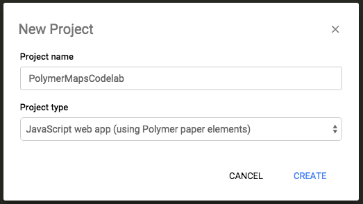
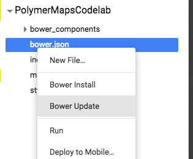
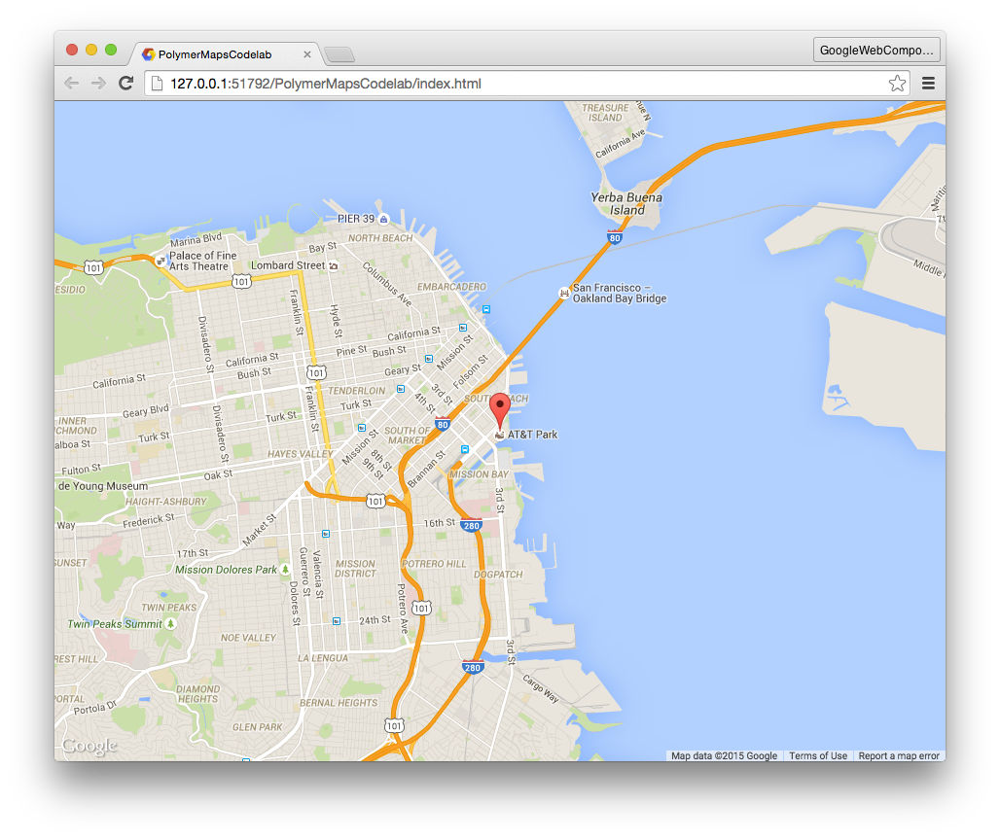

The
Google Web Components provide the
<google-map> element for declaratively rendering a Google Map. To use it, you first need to install it using Bower.
The first time you run Chrome Dev Editor it will ask you to setup your workspace environment.
Fire up Chrome Dev Editor and start a new project:

Chrome Dev Editor creates a basic scaffold for your Polymer app. In the background, it also uses
Bower to download and install a list of dependencies (including the Polymer core library) into the
bower_components/ folder.
Fetching the components make take some time if your internet connection is slow. You'll learn more about using
Bower in the next step.
PolymerMapsCodelab/
bower_components/ <!-- installed dependencies from Bower -->
bower.json <!-- Bower metadata files used for managing deps -->
index.html <!-- your app -->
main.js
styles.cssNormally, you'd run
bower install GoogleWebComponents/google-map --save on the command line to install
<google-map> and save it as a dependency. However, Chrome Dev Editor does not have a command line for running Bower commands. Instead,
you need to manually edit
bower.json to include
google-map, then run Chrome Dev Editor's
Bower Update feature.
Bower Update checks the dependencies in
bower.json and installs any missing ones.
bower.json and add
google-map to the
dependencies object:"dependencies": {
"iron-elements": "PolymerElements/iron-elements#^1.0.0",
"paper-elements": "PolymerElements/paper-elements#^1.0.1",
"google-map": "GoogleWebComponents/google-map#^1.0.3"
}bower.json filename in the editor.
The download may take few seconds. You can verify that
<google-map> (and any dependencies) were installed by checking that
bower_components/google-map/ was created and populated.
To employ
<google-map>, you need to:
index.html.In
index.html,
remove all other HTML imports
in the
<head> and replace them with a single import that loads
google-map.html:
<head>
....
<script src="bower_components/webcomponentsjs/webcomponents-lite.min.js"></script>
<link rel="import" href="bower_components/google-map/google-map.html">
</head>Next, replace the contents of
<body> with an instance of
<google-map>:
<body unresolved>
<google-map latitude="37.779" longitude="-122.3892" zoom="13"></google-map>
</body>Here's a pre block without code:
$ node client.js list wdfasdf asdf asdf asdf asdf asdf asdf asdf asdf asdfa sdf asdfa sdf asdfa sdfasdfasdfasdf
{ books:
[ { id: 123,
title: 'A Tale of Two Cities',
authors: 'Charles Dickens' } ] }
As you can see, using
<google-map> is completely declarative! The map is centered using the
latitude and
longitude attributes and its zoom level is set by the
zoom attribute.
If you run the app right now, nothing will display. In order for the map to properly display itself, you need to set
its container (in this case,
<body>) to have a fixed height.
Open
styles.css and replace its contents with default styling:
body, html {
font-family: 'Roboto', Arial, sans-serif;
height: 100%;
margin: 0;
}
<google-map> supports adding map markers to the map by declaring
<google-map-marker> elements as children. The marker locations are also set using
latitude and
longitude attributes.
Back in
index.html, add a draggable
<google-map-marker> to the map:
<google-map latitude="37.779" longitude="-122.3892" zoom="13" disable-default-ui>
<google-map-marker latitude="37.779" longitude="-122.3892"
title="Go Giants!" draggable="true"></google-map-marker>
</google-map>Notice that we've also disabled the map's controls by setting
disableDefaultUi to true. Since it's a boolean property, its presence as an HTML attribute makes it truthy.
If you haven't already done so, hit the button. At this point, you should see a map that takes up the entire viewport and has a single marker pin.
